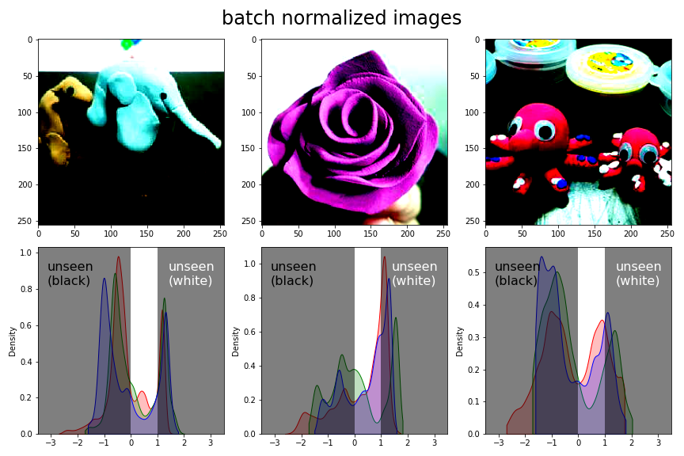

- 연산 결과를 그림으로 표현하다보면, 표현 가능한 범위를 넘어설 때가 있습니다.
- 이럴 때 어쩔 수 없이 표현 가능한 범위로 우겨넣어 표현하지만, 오해를 유발합니다.
- 최대한 오해를 방지하려는 노력으로 이해해 주시면 좋겠습니다.
1. 지난 글에 이어서
지난 글에 이런 부분이 있습니다.
상황을 다시 설명하면 이렇습니다.
- 데이터의 범위가 0
1에서 -22 정도로 바뀝니다. - 이미지로는 0~1 밖을 표현할 수 없습니다.
- 그래서 min-max scaling으로 0~1로 강제합니다.
- 결과적으로 채도가 낮아집니다.
- 데이터의 범위가 0
결과만 보면 BN은 데이터 값의 범위를 좁히는 것이라고 오해하기 너무 좋습니다.
아쉬운 마음에 밀도함수도 같이 그려봤지만 x 범위가 달라 오해를 키웁니다.
이번 글에서는 앞 글에서 유발한 오해를 주워담아보겠습니다.
2. 시각화 설계
matplotlib tutorial: Customizing Figure Layouts Using Gridspec and Other Functions
- 위 그림은 사실 matplotlib으로 저장한 파일들을 파워포인트에서 조합한 것입니다.
- 파워포인트의 효율성이 좋아서 종종 쓰는 방법이지만 제대로 다시 그려봅니다.
matplotlib으로 이런 그림을 그릴 때는 gridspec이 좋습니다.
- 합쳐질 그림들을 포함해서 3행 6열의 자리를 만듭니다.
- 밀도함수가 들어올 자리 6개는 자리 하나당 subplot 하나를 만듭니다.
- 이미지가 들어올 자리 3개는 자리 4개당 subplot 하나를 만듭니다.
코드로 표현하면 이렇습니다.
1
2
3
4
5
6
7
8
9
10
11
12
13
14
15
16
17
18
19import tensorflow as tf
from tensorflow.keras import layers
import numpy as np
import matplotlib.pyplot as plt
import seaborn as sns
fig = plt.figure(figsize=(12, 6))
# 3행 6열 자리 만들기
gridsize = (3, 6)
# kdeplot이 들어올 자리: 1 x 1
for i in range(6):
ax_kde = plt.subplot2grid(gridsize, (0, i))
# image가 들어올 자리: 2 x 2
for i in range(3):
ax_img = plt.subplot2grid(gridsize, (1, 2*i), rowspan=2, colspan=2)
3. batch normalization 수행
- 자리가 생겼으니, 이제 자리를 채울 그림들을 다듬어봅니다.
- 같은 그림들을 읽어서 batch normalization을 수행합니다.
- 이전 글과 정확히 동일한 코드입니다.
1
2
3
4
5
6
7
8
9
10
11
12
13
14
15
16
17
18
19
20
21
22
23
24
25
26
27
28
29
30from tensorflow.keras.models import Sequential
# 원본 파일 읽기
img0 = plt.imread("./4-bn_0.jpg")
img1 = plt.imread("./4-bn_1.jpg")
img2 = plt.imread("./4-bn_2.jpg")
# 그림 높이 저장
img_shape = img0.shape
# vectorization
imgs = np.zeros((3, ) + img_shape)
imgs[0] = img0/255.0
imgs[1] = img1/255.0
imgs[2] = img2/255.0
# 이미지를 텐서로 변환
imgs_tensor = tf.convert_to_tensor(imgs, dtype="float32")
# BN 적용을 위한 모델 구축
model = Sequential([
layers.BatchNormalization()
])
model.compile()
# BN 적용
bn1 = model(imgs_tensor, training=True)
# numpy 형태로 데이터 변환
bn1_numpy = bn1.numpy()
4. 데이터 분포 시각화
- 시각화 코드를 준비합니다.
- 지난번엔 밀도함수와 이미지를 따로 그렸지만 이번엔 한번에 출력되도록 하겠습니다.
- axes도 함께 출력해서 출력된 그림을 수정하기 좋게 합니다.
1
2
3
4
5
6
7
8
9
10
11
12
13
14
15
16
17
18
19
20
21
22
23
24
25
26
27
28
29
30
31def plot(imgs, xlim=None, suptitle=None):
fig, axes = plt.subplots(ncols=3, nrows=2, figsize=(12, 8))
axs = axes.ravel()
# image visualization
for ax, img in zip(axs[:3], imgs):
ax.imshow(img)
# kdeplot visualization
xlim_ = 0 # x 범위 설정을 위한 준비
for ax, img in zip(axs[3:], imgs):
colors = ["r", "g", "b"]
[sns.kdeplot(img[:,:,ch].flatten(), color=c, fill=True, cut=0, ax=ax) for (ch, c) in zip(range(3), colors)]
xlim_ax = ax.get_xlim()
xlim_ = max(xlim_, max(-xlim_ax[0], xlim_ax[1]))
if xlim == None: # x 범위를 대칭으로 만들기
axs[3].set_xlim(-xlim_, xlim_)
axs[4].set_xlim(-xlim_, xlim_)
axs[5].set_xlim(-xlim_, xlim_)
else: # 외부 입력 범위 사용
axs[3].set_xlim(-xlim, xlim)
axs[4].set_xlim(-xlim, xlim)
axs[5].set_xlim(-xlim, xlim)
# 제목 삽입
if suptitle != None:
fig.suptitle(suptitle, fontsize=24)
fig.tight_layout()
return fig, axes
4.1. 입력 데이터
입력 이미지와 채널별 데이터 분포를 그려봅니다.
batch normalization 결과와 비교하기 위해 밀도함수 범위를 넓게 잡습니다.
1
fig, axes = plot(imgs, 3.5, "original images")
데이터를 255로 나누어 넣었기 때문에 데이터가 0~1 사이에 분포하고 있습니다.
matplotlib은 이미지 데이터로 int를 받으면 0
255를 기준으로 그림을 표시하고, float를 받으면 01 기준으로 표시합니다.x 범위를 넓게 잡았기 때문에 분포 범위가 매우 좁게 그려졌습니다.
4.2. Batch Normalization 데이터
- batch normalization 결과를 그려봅니다.
- 0~1 외의 범위는 그림으로 표현되지 않기 때문에, 밀도함수를 살짝 가려서 그림으로 안보이는 부분이라는 표시를 했습니다.
1
2
3
4
5
6
7
8fig, axes = plot(bn1_numpy, 3.5, "batch normalized images")
for ax in axes[1, :]:
# 음영 표시
ax.axvspan(-3.5, 0, facecolor="k", alpha=0.5)
ax.axvspan(1, 3.5, facecolor="k", alpha=0.5)
# text 출력
ax.text(0.05, 0.8, "unseen\n(black)", transform=ax.transAxes, fontsize=16)
ax.text(0.7, 0.8, "unseen\n(white)", transform=ax.transAxes, fontsize=16, color="w")

- 일부 데이터가 표현되지 않는다는 경고 메시지가 뜹니다.
- 이전 글과는 다르게 눈이 쨍한 그림이 나옵니다.
min-max scaling을 하지 않았기 때문입니다. - 밀도함수의 범위가 확 넓어진 것이 눈에 뜨입니다.
- 이미지에 시커먼 부분과 새하얀 부분이 있는데, 시각화 범위를 벗어난 곳입니다.
4.3. min-max scaling
- 이미지에서 놓치는 부분 없이 표현하기 위해 min-max scaling을 합니다.
- 여기서 얻은 밀도함수는 원본과 정성비교만 가능합니다.
1
2
3
4
5
6bn_min, bn_max = bn1_numpy.min(), bn1_numpy.max()
# min-max scaling
bn_mm = (bn1_numpy - bn_min)/(bn_max - bn_min)
fig, axes = plot(bn_mm, 3.5, "batch normalized + min-max scaled images")
- 이미지의 채도가 떨어졌습니다.
- min-max scaling 전에는 범위가 넓어 드러나지 않았지만, 데이터 분포가 중앙으로 몰리면서 R, G, B 값들이 비슷해져 회색조에 가까워진 것으로 추정됩니다.
4.4. 밀도함수 정성비교
- 원본과 batch normalization을 거친 이미지를 나란히 놓고 비교합니다.
- 앞에서 만든 시각화 함수로 커버되지 않는 범위이므로 함수를 새로 만듭니다.
- 밀도함수만 그리면 어떤 이미지에서 나왔는지 알 수 없기 때문에, 이미지를 작게 삽입합니다.
1
2
3
4
5
6
7
8
9
10
11
12
13
14
15
16
17
18
19
20
21
22
23
24
25
26
27
28
29
30
31
32
33
34
35
36
37from matplotlib import patches
fig, axes = plt.subplots(ncols=3, nrows=2, figsize=(12, 8), sharex=True, sharey=True,
gridspec_kw={"hspace":0.3})
# RGB 세 채널을 각기 빨강, 녹색, 파랑으로 표기
colors = ["r", "g", "b"]
# 원본 이미지 채널별 밀도함수
for ax, img in zip(axes[0], imgs):
# list comprehension 사용 RGB 채널별 밀도함수 그리기
[sns.kdeplot(img[:,:,ch].flatten(), color=c, fill=True, cut=0, ax=ax) for (ch, c) in zip(range(3), colors)]
# 원본 그림 삽입
ax_inset = ax.inset_axes([0.02, 0.69, 0.3, 0.3])
ax_inset.imshow(img)
ax_inset.set_xticks([])
ax_inset.set_yticks([])
# batch normalization 후 이미지 채널별 밀도함수
for ax, b in zip(axes[1], bn_mm):
[sns.kdeplot(b[:,:,ch].flatten(), color=c, fill=True, cut=0, ax=ax) for (ch, c) in zip(range(3), colors)]
ax_inset = ax.inset_axes([0.02, 0.69, 0.3, 0.3])
ax_inset.imshow(b)
ax_inset.set_xticks([])
ax_inset.set_yticks([])
# 제목 붙이기
axes[0, 1].set_title("before batch normalization", fontsize=24, pad=12)
axes[1, 1].set_title("after batch normalization", fontsize=24, pad=12)
# 범례 그리기
for i, c in enumerate(colors):
x = 0.7
y = 0.85 - 0.1*i
Rectangle = patches.Rectangle((x, y), 0.12, 0.05, color=c, alpha=0.5, transform=axes[0, 2].transAxes)
axes[0, 2].add_patch(Rectangle)
axes[0, 2].text(x+0.2, y, c.upper(), fontdict={"fontsize":16, "color":"k"}, ha="center", transform=axes[0, 2].transAxes)
- 데이터의 존재 범위가 채널별로 독립적으로 변화되었습니다.
- 다른 이미지의 데이터 분포에 의해 서로 영향을 받았습니다.
- 예를 들어, 맨 오른쪽 이미지에서 B 채널과 G 채널이 가운데로 심하게 쏠렸는데 앞 두 이미지에서 두 색상이 쌍봉을 그리며 양 극단에 위치한 영향으로 보입니다.
seaborn의 kdeplot은
hue인자 외에는 범례를 생성해주지 않습니다.객체를 받아
ax.legend()명령으로 넣으려고 하면Legend does not support <AxesSubplot:ylabel='Density'> instances.경고가 발생합니다.부족한 기능을 수동으로 메웠습니다: 네모 상자와 텍스트를 넣어 보완했습니다.
만족스러운 그림을 얻었습니다.
최종 그림에 이 분포들을 삽입하기로 하고, 이제 이미지로 넘어갑니다.
5. 이미지 시각화
- 원본 이미지 하나를 그려봅니다.
1
plt.imshow(imgs[1])
- 원본 이미지에서 왼쪽 반을, batch normalization된 이미지에서 오른쪽 반을 가져옵니다.
- 의도적으로 min-max scaling되지 않은 이미지를 사용하겠습니다.
- 이미지의 왼쪽은 컬러 이미지 기준 3D numpy array의 두 번째 차원이 절반 이하라는 의미입니다.
- 마찬가지로 이미지의 오른쪽은 두 번째 차원이 절반 이상이라는 의미입니다.
1
2
3
4
5
6
7img_half = img_shape[0]//2 # 이미지를 자를 좌표.
img1_org = imgs[1][:, :img_half, :] # 왼쪽 절반 원본 이미지
img1_bn = bn1_numpy[1][:, img_half:, :] # 오른쪽 절반 batch normalization된 이미지
fig, axs = plt.subplots(ncols=2)
axs[0].imshow(img1_org)
axs[1].imshow(img1_bn)
- 이 둘을 합치겠습니다.
- numpy array를 붙이는 명령은
numpy.concatenate()입니다. - 경계선에 점선도 하나 그어줍니다.
1
2
3
4
5img1_c = np.concatenate((img1_org, img1_bn), axis=1)
fig, ax = plt.subplots()
ax.imshow(img1_c)
ax.axvline(128, ls="--", c="k")
6. 집대성
- 위에서 그린 부분 기술들을 한데 모았습니다.
1
2
3
4
5
6
7
8
9
10
11
12
13
14
15
16
17
18
19
20
21
22
23
24
25
26
27
28
29
30
31
32
33
34
35
36
37
38
39
40
41
42
43
44
45
46
47
48
49
50
51
52
53
54
55fig = plt.figure(figsize=(12, 6))
# 3행 6열 자리 준비
gridsize = (3, 6)
# 윗줄 : 밀도함수
for i in range(6):
# 한 자리에 그림 하나
ax_kde = plt.subplot2grid(gridsize, (0, i))
# 홀수 자리 : 원본 이미지 데이터 분포
if i%2 == 0: # original image kdeplot
colors = ["r", "g", "b"]
[sns.kdeplot(imgs[i//2, :,:,ch].flatten(), color=c, fill=True, cut=0, ax=ax_kde) for (ch, c) in zip(range(3), colors)]
# 제목 붙이기
ax_kde.set_title("original", fontsize=20, pad=12)
# 짝수 자리 : batch normalization된 이미지 데이터 분포
else: # batch normalized image kdeplot
colors = ["r", "g", "b"]
[sns.kdeplot(bn1_numpy[i//2, :,:,ch].flatten(), color=c, fill=True, cut=0, ax=ax_kde) for (ch, c) in zip(range(3), colors)]
# 시각화 불가능 영역을 음영으로 표시
ax_kde.axvspan(-3.5, 0, facecolor="k", alpha=0.2)
ax_kde.axvspan(1, 3.5, facecolor="k", alpha=0.2)
# 제목 붙이기
ax_kde.set_title("batch norm.", fontsize=20, pad=12)
# x축 범위 설정
ax_kde.set_xlim(-3.5, 3.5)
# 맨 왼쪽에만 y축에 "Density" 붙이기
if i == 0:
ax_kde.set_ylabel("Density", fontsize=20, labelpad=12)
else:
ax_kde.set_ylabel("")
# 원본과 batch normalization된 그림을 붙이는 함수
def img_c(img0, img1):
img0_ = img0[:, :img_half, :]
img1_ = img1[:, img_half:, :]
return np.concatenate((img0_, img1_), axis=1)
# 이미지 부분 출력
for i in range(3):
# 4 자리에 그림 하나
ax_img = plt.subplot2grid(gridsize, (1, 2*i), rowspan=2, colspan=2)
# 그림 출력
ax_img.imshow(img_c(imgs[i], bn1_numpy[i]))
# 그림 사이 경계선 삽입
ax_img.axvline(128, ls="--", c="k")
fig.tight_layout()